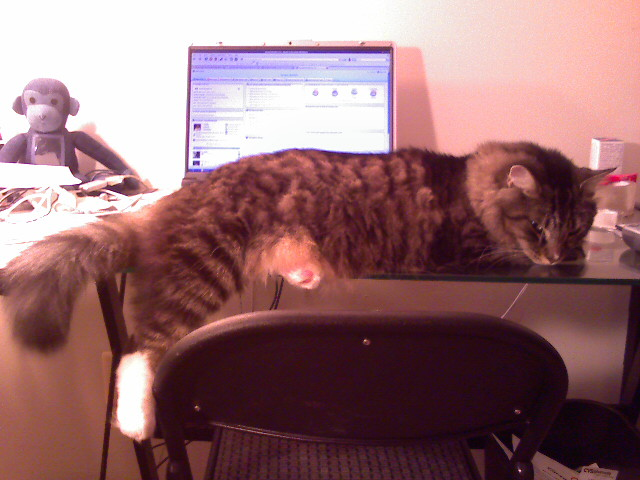

Cat Does Not Want Me To Work

I guess doing any kind of “real” blogging is out of the question now that old bossman Puck the cat is on the job. He must really like my company since when I got home at 6:15pm the two other roomies were asleep! Looks like Puck is sneaking in a cat nap, so I can try sneaking in a bit of work.